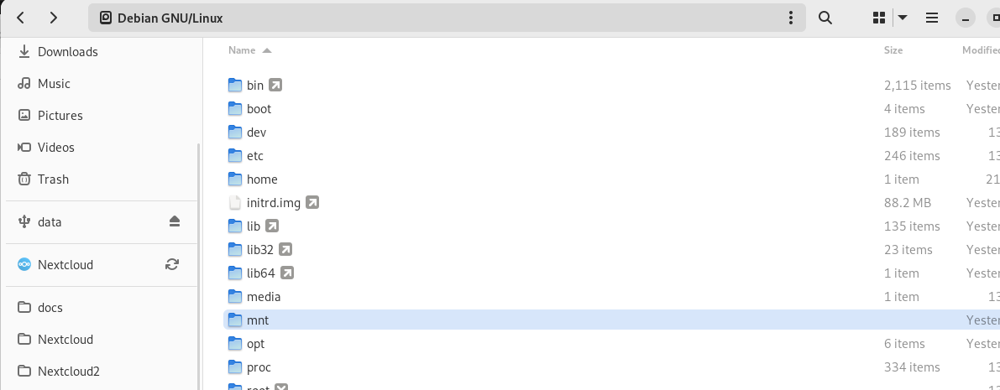
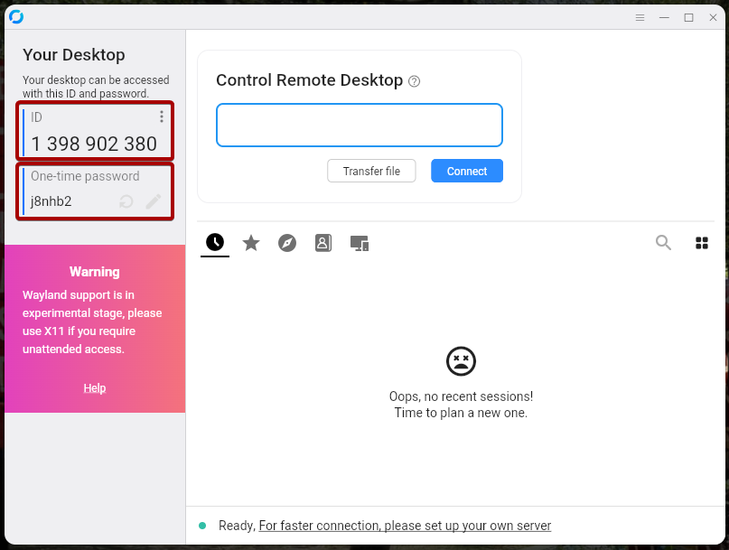
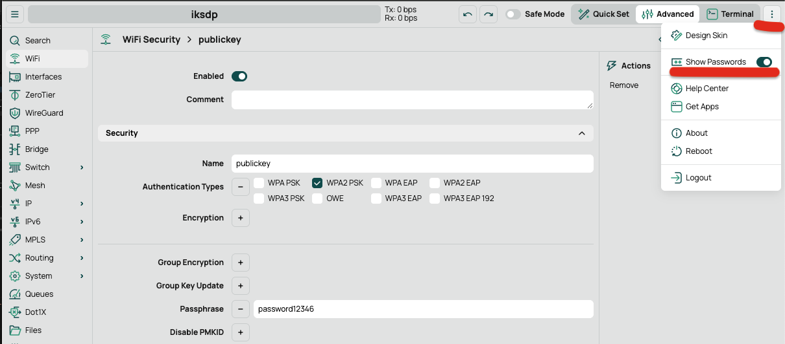

IKSDP Desktop Linux Power User Documentation
Creating a persistent USB-Stick
There might be the situation where users (e.g. pubils, teachers, others) want to permanently save their data, configure the system or install specific software which should remain after the reboot. In this case it makes sense to create a persistent USB-Stick for the user.
Encryption
You can choose if you want to encrypt the stick or not.
If the USB stick is encrypted and the password is lost, the access to the documents on the stick is completly lost!
The user has to make sure he always remembers the password!
Creating the Stick
- Start the shell script
- Open "Terminal": e.g.: Applications -> Utilities -> Terminal
su -
- Enter the superuser password
- Now start the usb creation script by typing the following in the terminal
/opt/iksdp/bin/create-usb-stick.sh
- The script will prompt "Enter the number of the device you want to use: "
- Choose the highest number, in our case it's: 3
- You receive a warning that everything is going to be removed from the stick.
- To proceed, the stick needs to be unmounted.
"Are you sure you want to proceed? (y/n): " - Choose: y
- Now the script might tell you that the device is currently mounted and need to be unmounted before proceeding.
- Choose: y
"Do you want to unmount it before proceeding? (y/n): " - The device now got unmounted.
- You have to set the size for the partition of the stick now.
"Enter size for the first partition (in MB, default 1024): " - Just press the "Enter"-Key
- in the next step you have
- do you want to encrypt the second partition? -> please choose
- proceed anyway -> y
Update the Operating System
Download latest image and copy to central storage
- download the newest image (.hybrid.iso) from the distribution share http://iksdp.pfadfinderzentrum.org
- to get connection to storage on router
- open terminal -> windows key -> type "terminal"
- enter:
su -
mount -t nfs 192.168.200.1:/usb2-part1/smb /mnt
- to copy the downloaded image file to /mnt
- /mnt is show in "other Locations" -> Debian GNU/Linux

- you will need to type superuser password twice
- indicator will show status of the copy job
Update possibility 1: Update using the network
- start the pc to update and hit "Delete" Button - at black screen and hit delete multiple times.
- use keyboard to select boot and ensure "Network UEFI:.." is selected as Boot Option #1
- select save+exit -> save settings and exit

- this screen might occur.. reboot at this step and hit F7 after boot

- this is the correct bootscreen hit enter
- select "Upgrade IKSDP"
- when updater is started completely it will look like this
- enter the folling commands to connect to central storage and attach it to the /mnt directory
sudo bash
mount -t nfs 192.168.200.1:/usb2-part1/smb /mnt
- correct output will be something like this

- copy the image using the dd command to the NVME Harddisk of the pc - ensure your image name is correct
dd if=/mnt/debian-live-bookworm-0.5.0-20250313055721-amd64.hybrid.iso of=/dev/nvme0n1 status=progress
- run reboot command

- enter BIOS setup using the Delete button at start
- select boot and ensure "NVME" is selected as Boot Option #1
- select save+exit -> save settings and exit
- check that image have a higher version now

- Done
Update possibility 2: use USB Stick
ensure usb boot is enabled
- start the pc to update and hit "Delete" Button - at black screen and hit delete multiple times.
- use keyboard to select boot and ensure "USB" is selected as Boot Option #1
- press F10 to save & exit
- reboot the PC
always
- enter special usb update stick
- select "try or install ubuntu"
- wait for the "Welcome to Ubuntu" to start fully
- when "choose your language" appears you can close the windows using the X
- start "terminal"

- run commands to connect to central storage
sudo bash
mount -t cifs -o username=user,password=live //192.168.200.1/smb /mnt

- update nvme harddisk using the commands
dd if=/mnt/debian-live-bookworm-0.5.0-20250313055721-amd64.hybrid.iso of=/dev/nvme0n1 status=progress
- type "reboot"
- pull out update stick and press enter when prompted
- check that image have a higher version now
Update possibility 3: use Image Updater
- insert your personal usb stick where you downloaded the image before
- start the PC and choose: "Live System (amd64 update)
-
enter usename: root and the Password for the superuser
-
start the terminal
su -
dd if=/home/user/Downloads/debian-live-FILLOUTTHIS.hybrid.iso of=/dev/nvme0n1 status=progress
- if done type reboot
Support via Rustdesk Remote Session
Establish a Remote Session
- Open the application "Rustdesk" by pressing "Windows"-Key and then start typing "Rustdesk".
- Now click the "Rustdesk"-Icon.

- A different way to start Rustdesk would be by opening the Applications Tab in the taskbar at the top and then click on "Internet" and "Rustdesk".

- Now you will send the "ID" and the "One-time Password" which you can see on the left side to the person you want to receive Support from.
 - A small window might appear which shows that a device wants to connect to your Computer. Normally the connection gets automatically established. If not, click the "Accept" Button.

- If its the first time someone connects to your Computer then you will have to select the screen which should be shared. Select the screen, tick the box "Remember this selection" and then click "Share".

- If you see this little icon in the top taskbar, then the connection is established.

Stop the Remote Session
- Move your mouse over the "Rustdesk"-Icon in the left sidebar. Now two smaller windows should appear next to the sidebar.
- Click on the window which shows the active connection.

- Now the "Connection"-Window should appear on the screen.
- Click "Disconnect" to end the remote session.

- The small icon in the top taskbar
 should now be disappeared, which means the connection is closed for the remote device.
should now be disappeared, which means the connection is closed for the remote device.
Remote Support Using JetKVM
There might be situations where the support team needs to connect directly to a local computer.
For this reason, a JetKVM device has been set up.
Requirements
You will need:
- Internet Connection
- 1x LAN Cable
- 1x JetKVM Device
- 1x HDMI to Mini HDMI Cable
- 1x USB-A to USB-C Cable
Setup the JetKVM Device
- Connect the USB-C Cable to the JetKVM device
- Connect the Mini HDMI Cable to the JetKVM device
- Connect one end of the LAN-Cable to the JetKVM device
Setup the Connection for the JetKVM Device
- Unplug the LAN-Cable of port 6 (printer) from the router. The printer will not be accessible at this time.
- Plug in the other end of the LAN-Cable which is already connected to the JetKVM device.
- Now unplug the HDMI Cable which is currently connected to the PC (this one belongs to the monitor).
- Now plug in the HDMI Cable and the USB-A Cable from the JetKVM device to the PC. During the support session you are not able to see the output of the monitor. The screen stays black, because the output goes to the JetKVM device.
- If everything is correctly connected you will see the IP 192.168.200.20 on the screen of the JetKVM device. You also see that USB and HDMI is connected.
- At this point the support team is able to connect to the PC via VPN or cloud.
On the local network, the device is accessible at http://192.168.200.20.
Closing the Connection for the JetKVM Device
- Revert the steps from the setup part starting with step 4.
- Make sure the HDMI Cable from the Monitor is connected to the PC.
- Make sure the LAN Cable from the printer is connected to port 6 of the router.
- The printer should be accessible again and the monitor should show you the output of the PC again.
Update Wifi public password
Use one of the PCs to do the following steps:
- open a browser and go to http://192.168.200.1
- logon with provided username and password
- select "Advanced"->Wifi->Security and select "publickey"
- select three dots menu and select "show passwords" 
- enter the password into "passphrase" field. and click "OK"
wait 1-2 minutes for changes to be applied. Test the new password.